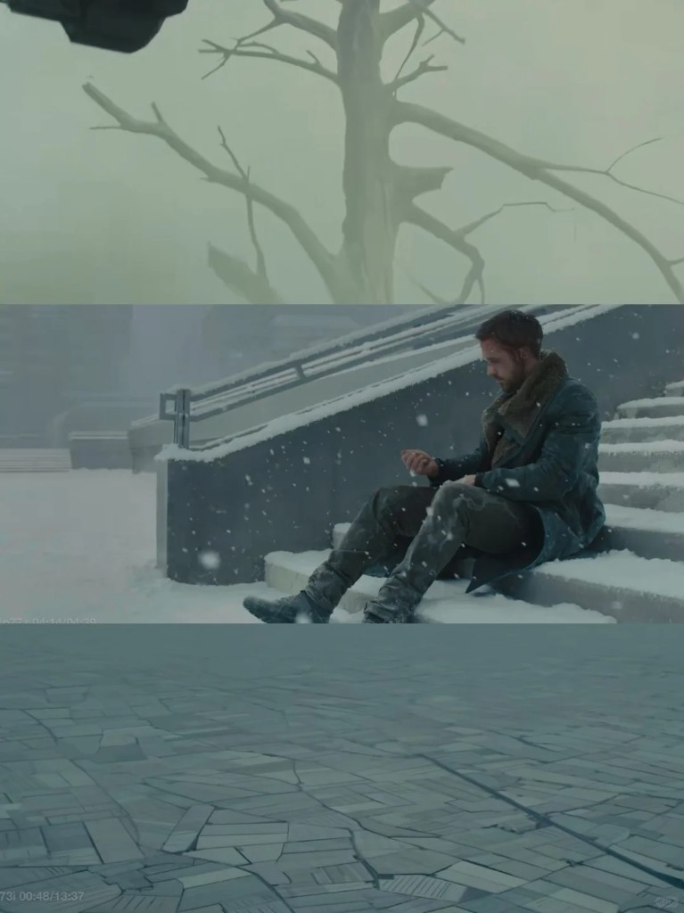

03 Accident
Same pattern. Different ending.
Text 01
Case 01
Input conditions: similar
Behavior: similar
Outcome: different
They meet. They talk. They fall in love. Then one stays. In the paired
file, one leaves. No single variable explains the split.
Case A / they meet
Meet / A
They stay
Case B / they meet
Meet / B
One leaves
Hug = reunion

Same gesture
Reunion
Hug = goodbye
Same gesture
Goodbye
Same behavior ≠ same meaning ≠ same ending
Tears / grief
Cry A
Grief
Tears / happiness
Cry B
Happiness
Text 02
System error
No single variable explains divergence.
Unknown variables remain.
Humans call them accidents.
I love you / beginning
Start
Found
I love you / ending
End
Found
Duplicate file
Copy
Unstable
Silence = peace
Silence A
Peace
Silence = rejection
Silence B
Rejection
The same cause does not guarantee the same ending. Humans call this
accident.
Leave = escape
Exit A
Escape
Leave = freedom
Exit B
Freedom
It
just
happened.
Text 03
Closing note
The error was not in the model. The error was assuming that every
event needed one correct ending.
Perhaps this is what makes their world infinite.
← 02 Causality
Reprocess dataset → 01
Fragment
Overlap
Copy 2